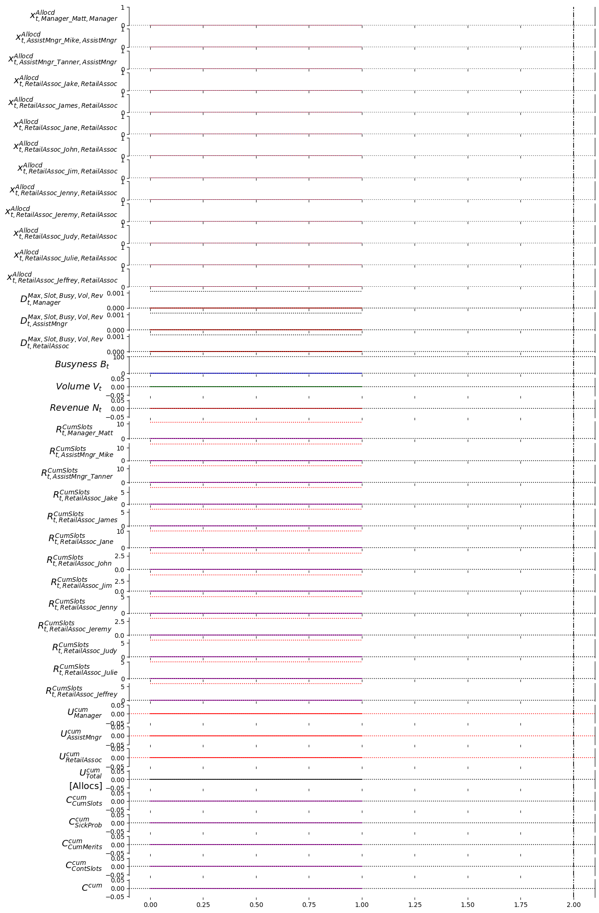

# Set up autoreloadmodel
Model of the environment | System-Under-Steer
pd.__version__'2.0.3'# !pip freeze | grep pandas
# !pip freeze|grep openpyxl
# !pip freeze# !pip install -U ray==2.8.1
# !pip install openpyxlclass MyClass(int): pass@patch
def func(self: MyClass, a): return self + amc = MyClass(3)mc.func(10)13Model
Model ()
Initialize self. See help(type(self)) for accurate signature.
M = Model()# @patch
# def reset(self:Model):
# self.Ccum = 0.0
# self.Ucum = 0Model.W_fn
Model.W_fn (t, dt)
| Details | |
|---|---|
| t | |
| dt | # exogenous information |
t = 7dt = pd.to_datetime(cf.START_DATE_TIME); dtTimestamp('2023-12-04 00:00:00')M.W_fn(t, dt){'demands': {'Manager': 0, 'AssistMngr': 0, 'RetailAssoc': 0},
'merits': {'Manager_Matt': 0,
'AssistMngr_Mike': 1,
'AssistMngr_Tanner': 0,
'RetailAssoc_Jake': 0,
'RetailAssoc_James': 1,
'RetailAssoc_Jane': 0,
'RetailAssoc_John': 0,
'RetailAssoc_Jim': 0,
'RetailAssoc_Jenny': 0,
'RetailAssoc_Jeremy': 0,
'RetailAssoc_Judy': 0,
'RetailAssoc_Julie': 0,
'RetailAssoc_Jeffrey': 0},
'availabilities': 0 0
1 0
2 0
3 0
4 0
5 0
6 0
7 0
8 0
9 0
10 0
11 0
12 0
Name: 0, dtype: int64,
'busyness': 0,
'volume': 0,
'revenue': 0.0}Model.update_Ccum
Model.update_Ccum (t, dt, S_t, x_t, theta)
m = Model(); m<__main__.Model>t = 8
dt = pd.to_datetime(cf.START_DATE_TIME); dtTimestamp('2023-12-04 00:00:00')S_t = m.S_t; S_t{'R_t': ResourceId Type RAvail_t RCumSlots_t RCumMerits_t RComplete_t
0 Matt Manager 0 0 0 0
1 Mike AssistMngr 0 0 0 0
2 Tanner AssistMngr 0 0 0 0
3 Jake RetailAssoc 0 0 0 0
4 James RetailAssoc 0 0 0 0
5 Jane RetailAssoc 0 0 0 0
6 John RetailAssoc 0 0 0 0
7 Jim RetailAssoc 0 0 0 0
8 Jenny RetailAssoc 0 0 0 0
9 Jeremy RetailAssoc 0 0 0 0
10 Judy RetailAssoc 0 0 0 0
11 Julie RetailAssoc 0 0 0 0
12 Jeffrey RetailAssoc 0 0 0 0,
'D_t': Type DSlot_t DBusy_t DVolume_t DRevenue_t DMax_t
0 Manager 1 0 0 0 0
1 AssistMngr 1 0 0 0 0
2 RetailAssoc 1 0 0 0 0,
'M_t': ResourceId Type nMerits_t
0 Matt Manager 0
1 Mike AssistMngr 0
2 Tanner AssistMngr 0
3 Jake RetailAssoc 0
4 James RetailAssoc 0
5 Jane RetailAssoc 0
6 John RetailAssoc 0
7 Jim RetailAssoc 0
8 Jenny RetailAssoc 0
9 Jeremy RetailAssoc 0
10 Judy RetailAssoc 0
11 Julie RetailAssoc 0
12 Jeffrey RetailAssoc 0,
'B_t': Busy_t
0 0,
'V_t': Volume_t
0 0,
'N_t': Revenue_t
0 0,
'xAlloc_t_1': Comb Allocd_t
0 Manager_Matt___Manager False
1 AssistMngr_Mike___AssistMngr False
2 AssistMngr_Tanner___AssistMngr False
3 RetailAssoc_Jake___RetailAssoc False
4 RetailAssoc_James___RetailAssoc False
5 RetailAssoc_Jane___RetailAssoc False
6 RetailAssoc_John___RetailAssoc False
7 RetailAssoc_Jim___RetailAssoc False
8 RetailAssoc_Jenny___RetailAssoc False
9 RetailAssoc_Jeremy___RetailAssoc False
10 RetailAssoc_Judy___RetailAssoc False
11 RetailAssoc_Julie___RetailAssoc False
12 RetailAssoc_Jeffrey___RetailAssoc False}x_t = m.x_t; x_t{'xAlloc_t': Comb Allocd_t
0 Manager_Matt___Manager False
1 AssistMngr_Mike___AssistMngr False
2 AssistMngr_Tanner___AssistMngr False
3 RetailAssoc_Jake___RetailAssoc False
4 RetailAssoc_James___RetailAssoc False
5 RetailAssoc_Jane___RetailAssoc False
6 RetailAssoc_John___RetailAssoc False
7 RetailAssoc_Jim___RetailAssoc False
8 RetailAssoc_Jenny___RetailAssoc False
9 RetailAssoc_Jeremy___RetailAssoc False
10 RetailAssoc_Judy___RetailAssoc False
11 RetailAssoc_Julie___RetailAssoc False
12 RetailAssoc_Jeffrey___RetailAssoc False}P = pol.Policy(M)theta = P.build_theta({
'thCumSlots': .1,
'thSickProb': .3,
'thCumMerits': .2,
'thContSlots': 1 - (.6),
'thSelect': 'random'
}); thetaTheta(thCumSlots=0.1, thSickProb=0.3, thCumMerits=0.2, thContSlots=0.4, thSelect='random')Model.performAllocDecision
Model.performAllocDecision (S_t, x_t, theta)
Model.S__M_fn
Model.S__M_fn (t, dt, S_t, x_t, W_tt1, theta)
Model.C_fn
Model.C_fn (S_t, x_t, W_tt1, theta)
Model.step
Model.step (t, dt, theta)
Usage
# hide
# QUICK STEP
def print_S_t():
print(f'M.S_t["R_t"]=\n{M.S_t["R_t"]}')
print(f'M.S_t["D_t"]=\n{M.S_t["D_t"]}')
def print_x_t():
# print(f'x_t.x_t= {x_t.x_t}')
print(f'M.x_t["xAlloc_t"]=\n{M.x_t["xAlloc_t"]}')
record = []
l = 1
M = Model()
P = pol.Policy(M)
## DEM = DemandSimulator(seed=SEED_TRAIN); print(f'{DEM.simulate()=}')
## MER = MeritSimulator(seed=SEED_TRAIN); print(f'{MER.simulate()=}')
theta_test = P.build_theta({
'thCumSlots': .1,
'thSickProb': .3,
'thCumMerits': .2,
'thContSlots': 1 - (.6),
'thSelect': 'random'
})
record_l = [cf.piNAMES[0], theta_test, l]; print(f'{record_l=}')
print_S_t()
print_x_t()record_l=['X__Alloc', Theta(thCumSlots=0.1, thSickProb=0.3, thCumMerits=0.2, thContSlots=0.4, thSelect='random'), 1]
M.S_t["R_t"]=
ResourceId Type RAvail_t RCumSlots_t RCumMerits_t RComplete_t
0 Matt Manager 0 0 0 0
1 Mike AssistMngr 0 0 0 0
2 Tanner AssistMngr 0 0 0 0
3 Jake RetailAssoc 0 0 0 0
4 James RetailAssoc 0 0 0 0
5 Jane RetailAssoc 0 0 0 0
6 John RetailAssoc 0 0 0 0
7 Jim RetailAssoc 0 0 0 0
8 Jenny RetailAssoc 0 0 0 0
9 Jeremy RetailAssoc 0 0 0 0
10 Judy RetailAssoc 0 0 0 0
11 Julie RetailAssoc 0 0 0 0
12 Jeffrey RetailAssoc 0 0 0 0
M.S_t["D_t"]=
Type DSlot_t DBusy_t DVolume_t DRevenue_t DMax_t
0 Manager 1 0 0 0 0
1 AssistMngr 1 0 0 0 0
2 RetailAssoc 1 0 0 0 0
M.x_t["xAlloc_t"]=
Comb Allocd_t
0 Manager_Matt___Manager False
1 AssistMngr_Mike___AssistMngr False
2 AssistMngr_Tanner___AssistMngr False
3 RetailAssoc_Jake___RetailAssoc False
4 RetailAssoc_James___RetailAssoc False
5 RetailAssoc_Jane___RetailAssoc False
6 RetailAssoc_John___RetailAssoc False
7 RetailAssoc_Jim___RetailAssoc False
8 RetailAssoc_Jenny___RetailAssoc False
9 RetailAssoc_Jeremy___RetailAssoc False
10 RetailAssoc_Judy___RetailAssoc False
11 RetailAssoc_Julie___RetailAssoc False
12 RetailAssoc_Jeffrey___RetailAssoc False## hide
# T = 7*24
# T = 2*24
T = 2
# T = 1*SLOTS_PER_DAY
# T = 2*SLOTS_PER_DAY
dt = pd.to_datetime(cf.START_DATE_TIME)
dt_delta = pd.Timedelta(cf.DATE_TIME_DELTA)
for t in range(T):
print(f'\n################# t={t}, dt={dt} #################')
# getattr(P, 'X__AllocBelow')(t, M.S_t, M.x_t, theta_test); #print(f'{x_t=}')
getattr(P, 'X__Alloc')(t, dt, M.S_t, M.x_t, theta_test); #print(f'{x_t=}')
print_S_t()
print_x_t()
# record_t = M.step(t, theta_test)
record_t = M.step(t, dt, theta_test)
print(f'\nAFTER STEP:')
record.append(record_l + record_t); #print(f'{record=}')
dt = dt + dt_delta
# print_S_t()
# print(f'{M.Ccum=}')
################# t=0, dt=2023-12-04 00:00:00 #################
M.S_t["R_t"]=
ResourceId Type RAvail_t RCumSlots_t RCumMerits_t RComplete_t
0 Matt Manager 0 0 0 0
1 Mike AssistMngr 0 0 0 0
2 Tanner AssistMngr 0 0 0 0
3 Jake RetailAssoc 0 0 0 0
4 James RetailAssoc 0 0 0 0
5 Jane RetailAssoc 0 0 0 0
6 John RetailAssoc 0 0 0 0
7 Jim RetailAssoc 0 0 0 0
8 Jenny RetailAssoc 0 0 0 0
9 Jeremy RetailAssoc 0 0 0 0
10 Judy RetailAssoc 0 0 0 0
11 Julie RetailAssoc 0 0 0 0
12 Jeffrey RetailAssoc 0 0 0 0
M.S_t["D_t"]=
Type DSlot_t DBusy_t DVolume_t DRevenue_t DMax_t
0 Manager 1 0 0 0 0
1 AssistMngr 1 0 0 0 0
2 RetailAssoc 1 0 0 0 0
M.x_t["xAlloc_t"]=
Comb Allocd_t
0 Manager_Matt___Manager False
1 AssistMngr_Mike___AssistMngr False
2 AssistMngr_Tanner___AssistMngr False
3 RetailAssoc_Jake___RetailAssoc False
4 RetailAssoc_James___RetailAssoc False
5 RetailAssoc_Jane___RetailAssoc False
6 RetailAssoc_John___RetailAssoc False
7 RetailAssoc_Jim___RetailAssoc False
8 RetailAssoc_Jenny___RetailAssoc False
9 RetailAssoc_Jeremy___RetailAssoc False
10 RetailAssoc_Judy___RetailAssoc False
11 RetailAssoc_Julie___RetailAssoc False
12 RetailAssoc_Jeffrey___RetailAssoc False
AFTER STEP:
################# t=1, dt=2023-12-04 01:00:00 #################
M.S_t["R_t"]=
ResourceId Type RAvail_t RCumSlots_t RCumMerits_t RComplete_t
0 Matt Manager 0 0 0 0
1 Mike AssistMngr 0 0 1 0
2 Tanner AssistMngr 0 0 0 0
3 Jake RetailAssoc 0 0 0 0
4 James RetailAssoc 0 0 1 0
5 Jane RetailAssoc 0 0 0 0
6 John RetailAssoc 0 0 0 0
7 Jim RetailAssoc 0 0 0 0
8 Jenny RetailAssoc 0 0 0 0
9 Jeremy RetailAssoc 0 0 0 0
10 Judy RetailAssoc 0 0 0 0
11 Julie RetailAssoc 0 0 0 0
12 Jeffrey RetailAssoc 0 0 0 0
M.S_t["D_t"]=
Type DSlot_t DBusy_t DVolume_t DRevenue_t DMax_t
0 Manager 0 0 0 0 0
1 AssistMngr 0 0 0 0 0
2 RetailAssoc 0 0 0 0 0
M.x_t["xAlloc_t"]=
Comb Allocd_t
0 Manager_Matt___Manager False
1 AssistMngr_Mike___AssistMngr False
2 AssistMngr_Tanner___AssistMngr False
3 RetailAssoc_Jake___RetailAssoc False
4 RetailAssoc_James___RetailAssoc False
5 RetailAssoc_Jane___RetailAssoc False
6 RetailAssoc_John___RetailAssoc False
7 RetailAssoc_Jim___RetailAssoc False
8 RetailAssoc_Jenny___RetailAssoc False
9 RetailAssoc_Jeremy___RetailAssoc False
10 RetailAssoc_Judy___RetailAssoc False
11 RetailAssoc_Julie___RetailAssoc False
12 RetailAssoc_Jeffrey___RetailAssoc False
AFTER STEP:## hide
V = vis.Visualization()
Labels = V.setup_plot_labels()df_test_n_t = pd.DataFrame.from_records(record, columns=Labels)
df_test_n_t.tail()| piName | theta | l | t | dt | RAvail_t_Manager_Matt | RAvail_t_AssistMngr_Mike | RAvail_t_AssistMngr_Tanner | RAvail_t_RetailAssoc_Jake | RAvail_t_RetailAssoc_James | RAvail_t_RetailAssoc_Jane | RAvail_t_RetailAssoc_John | RAvail_t_RetailAssoc_Jim | RAvail_t_RetailAssoc_Jenny | RAvail_t_RetailAssoc_Jeremy | RAvail_t_RetailAssoc_Judy | RAvail_t_RetailAssoc_Julie | RAvail_t_RetailAssoc_Jeffrey | RCumSlots_t_Manager_Matt | RCumSlots_t_AssistMngr_Mike | RCumSlots_t_AssistMngr_Tanner | RCumSlots_t_RetailAssoc_Jake | RCumSlots_t_RetailAssoc_James | RCumSlots_t_RetailAssoc_Jane | RCumSlots_t_RetailAssoc_John | RCumSlots_t_RetailAssoc_Jim | RCumSlots_t_RetailAssoc_Jenny | RCumSlots_t_RetailAssoc_Jeremy | RCumSlots_t_RetailAssoc_Judy | RCumSlots_t_RetailAssoc_Julie | RCumSlots_t_RetailAssoc_Jeffrey | RCumMerits_t_Manager_Matt | RCumMerits_t_AssistMngr_Mike | RCumMerits_t_AssistMngr_Tanner | RCumMerits_t_RetailAssoc_Jake | RCumMerits_t_RetailAssoc_James | RCumMerits_t_RetailAssoc_Jane | RCumMerits_t_RetailAssoc_John | RCumMerits_t_RetailAssoc_Jim | RCumMerits_t_RetailAssoc_Jenny | RCumMerits_t_RetailAssoc_Jeremy | RCumMerits_t_RetailAssoc_Judy | RCumMerits_t_RetailAssoc_Julie | RCumMerits_t_RetailAssoc_Jeffrey | RComplete_t_Manager_Matt | RComplete_t_AssistMngr_Mike | RComplete_t_AssistMngr_Tanner | RComplete_t_RetailAssoc_Jake | RComplete_t_RetailAssoc_James | RComplete_t_RetailAssoc_Jane | RComplete_t_RetailAssoc_John | RComplete_t_RetailAssoc_Jim | RComplete_t_RetailAssoc_Jenny | RComplete_t_RetailAssoc_Jeremy | RComplete_t_RetailAssoc_Judy | RComplete_t_RetailAssoc_Julie | RComplete_t_RetailAssoc_Jeffrey | DSlot_t_Manager | DSlot_t_AssistMngr | DSlot_t_RetailAssoc | DBusy_t_Manager | DBusy_t_AssistMngr | DBusy_t_RetailAssoc | DVolume_t_Manager | DVolume_t_AssistMngr | DVolume_t_RetailAssoc | DRevenue_t_Manager | DRevenue_t_AssistMngr | DRevenue_t_RetailAssoc | DMax_t_Manager | DMax_t_AssistMngr | DMax_t_RetailAssoc | B_t | V_t | N_t | Ucum_Manager | Ucum_AssistMngr | Ucum_RetailAssoc | Ucum_Total | Ccum_CumSlots | Ccum_SickProb | Ccum_CumMerits | Ccum_ContSlots | Ccum | Allocd_t_Manager_Matt___Manager | Allocd_t_AssistMngr_Mike___AssistMngr | Allocd_t_AssistMngr_Tanner___AssistMngr | Allocd_t_RetailAssoc_Jake___RetailAssoc | Allocd_t_RetailAssoc_James___RetailAssoc | Allocd_t_RetailAssoc_Jane___RetailAssoc | Allocd_t_RetailAssoc_John___RetailAssoc | Allocd_t_RetailAssoc_Jim___RetailAssoc | Allocd_t_RetailAssoc_Jenny___RetailAssoc | Allocd_t_RetailAssoc_Jeremy___RetailAssoc | Allocd_t_RetailAssoc_Judy___RetailAssoc | Allocd_t_RetailAssoc_Julie___RetailAssoc | Allocd_t_RetailAssoc_Jeffrey___RetailAssoc | |
|---|---|---|---|---|---|---|---|---|---|---|---|---|---|---|---|---|---|---|---|---|---|---|---|---|---|---|---|---|---|---|---|---|---|---|---|---|---|---|---|---|---|---|---|---|---|---|---|---|---|---|---|---|---|---|---|---|---|---|---|---|---|---|---|---|---|---|---|---|---|---|---|---|---|---|---|---|---|---|---|---|---|---|---|---|---|---|---|---|---|---|---|---|---|---|---|---|---|
| 0 | X__Alloc | (0.1, 0.3, 0.2, 0.4, random) | 1 | 0 | 2023-12-04 00:00:00 | 0 | 0 | 0 | 0 | 0 | 0 | 0 | 0 | 0 | 0 | 0 | 0 | 0 | 0 | 0 | 0 | 0 | 0 | 0 | 0 | 0 | 0 | 0 | 0 | 0 | 0 | 0 | 1 | 0 | 0 | 1 | 0 | 0 | 0 | 0 | 0 | 0 | 0 | 0 | 0 | 0 | 0 | 0 | 0 | 0 | 0 | 0 | 0 | 0 | 0 | 0 | 0 | 0 | 0 | 0 | 0 | 0 | 0 | 0 | 0 | 0 | 0 | 0 | 0 | 0 | 0 | 0 | 0 | 0 | 0.0000 | 0 | 0 | 0 | 0 | 0.0000 | 0.0000 | 0.0000 | 0.0000 | 0.0000 | False | False | False | False | False | False | False | False | False | False | False | False | False |
| 1 | X__Alloc | (0.1, 0.3, 0.2, 0.4, random) | 1 | 1 | 2023-12-04 01:00:00 | 0 | 0 | 0 | 0 | 0 | 0 | 0 | 0 | 0 | 0 | 0 | 0 | 0 | 0 | 0 | 0 | 0 | 0 | 0 | 0 | 0 | 0 | 0 | 0 | 0 | 0 | 0 | 1 | 0 | -1 | 1 | 0 | 0 | 0 | -1 | 0 | 0 | -1 | -1 | 0 | 0 | 0 | 0 | 0 | 0 | 0 | 0 | 0 | 0 | 0 | 0 | 0 | 0 | 0 | 0 | 0 | 0 | 0 | 0 | 0 | 0 | 0 | 0 | 0 | 0 | 0 | 0 | 0 | 0 | 0.0000 | 0 | 0 | 0 | 0 | 0.0000 | 0.0000 | 0.0000 | 0.0000 | 0.0000 | False | False | False | False | False | False | False | False | False | False | False | False | False |
## hide
V.plot_records(
df=df_test_n_t,
df_non=None,
pars=defaultdict(str, {
# 'thetaAdj1': {a1n: theta_test.thAdj1[a1n] for a1n in a1NAMES},
# 'thetaAdj3': {a1n: theta_test.thAdj3[a1n] for a1n in a1NAMES},
# 'suptitle': f'TRAINING OF X__AdjBelow POLICY'+'\n'+f'(first {first_n_t} records)'+'\n'+ \
# f'L = {L}, T = {T}, '+ \
# r'$\theta^*=$'+f'{P.round_theta(best_theta_AdjBelow)}',
'T': T
}),
)/Users/kobus/AIShiftScheduler_KE5/AIShiftScheduler_KE5/visualization.py:429: UserWarning: Attempting to set identical low and high ylims makes transformation singular; automatically expanding.
axs[xi+i].set_ylim(0, ymax); axs[xi+i].spines['top'].set_visible(False); axs[xi+i].spines['right'].set_visible(True); axs[xi+i].spines['bottom'].set_visible(False)